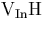
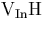
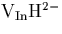
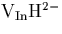
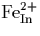
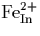

We have shown that  is a single donor forming
is a single donor forming  , with a donor level in the upper part of the gap. It is
tetrahedrally symmetric and the calculated vibrational modes are in
excellent agreement with experimental data for the 2316 cm-1
mode.
, with a donor level in the upper part of the gap. It is
tetrahedrally symmetric and the calculated vibrational modes are in
excellent agreement with experimental data for the 2316 cm-1
mode.
 is shown to be electrically inactive, but the
partially hydrogenated vacancies,
is shown to be electrically inactive, but the
partially hydrogenated vacancies,  and act as acceptors, forming
and act as acceptors, forming  and with acceptor levels in the lower gap region.
and with acceptor levels in the lower gap region.  compensates
compensates  leading to the formation of . The donor electron could also be trapped by the
partially hydrogenated vacancy centers,
leading to the formation of . The donor electron could also be trapped by the
partially hydrogenated vacancy centers,  , and , or even
, and , or even  , however these are present in
much lower concentrations than
, however these are present in
much lower concentrations than  .
.
Darwich et al.[59] have observed a number of vibrational modes in their InP:Fe samples between 2202.39 cm-1 and 2282.8 cm-1 which have been attributed to H-related complexes[53], and we suggest that the partially hydrogenated vacancy centers could account for at least some of these modes.
In agreement with experiment, the calculations show that H is able to passivate Group II acceptors such as Be. It lies bond centred between Be and P, and forms a strong bond with P rather than Be. Both the Be atom and its P neighbour drop away from each other along the C3 axis so as to lie co-planar with their three other neighbouring atoms. This result seems to hold true for both Be and Mg, in InP as well as GaAs. Since it appears that H passivates Mg in the AB site for GaN it would be interesting to extend this current study to further acceptor impurities such as Zn and Cd, as well as other III-V compounds, to determine any trend in passivation site with host material and acceptor type. In addition, fully hydrogenated vacancies should act as donors in other III-V materials and this study could be extended to examine that.